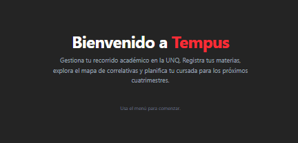
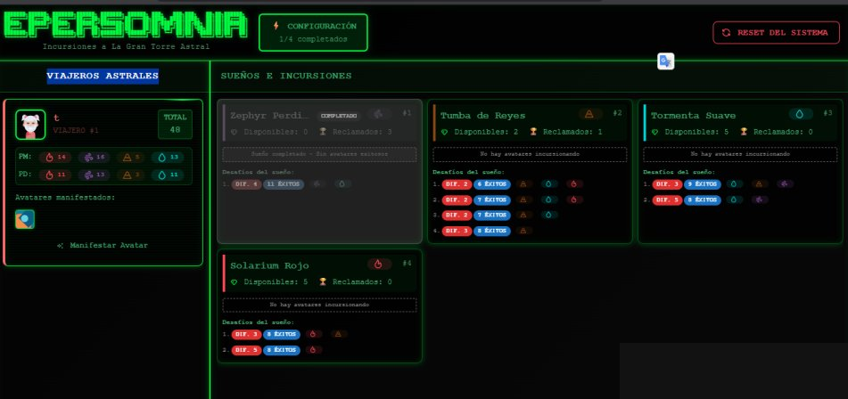

Backend Developer | Java • Spring Boot • APIs REST
Estudiante de Tecnicatura en Programación en la UNQ, apasionado por el desarrollo backend. Trabajo con Java, Spring Boot, PostgreSQL, MongoDB y Neo4j, en equipos ágiles con Scrum y Jira.

API backend que genera combinaciones de horarios universitarios a partir de oferta académica, evitando conflictos y optimizando la cursada.

API REST backend de un juego de rol onírico. Arquitectura en capas con Java, Spring Boot, PostgreSQL, MongoDB, Neo4j y Elasticsearch. Desarrollado en equipo aplicando GitFlow.
* La demo requiere el servidor Spring corriendo localmente.